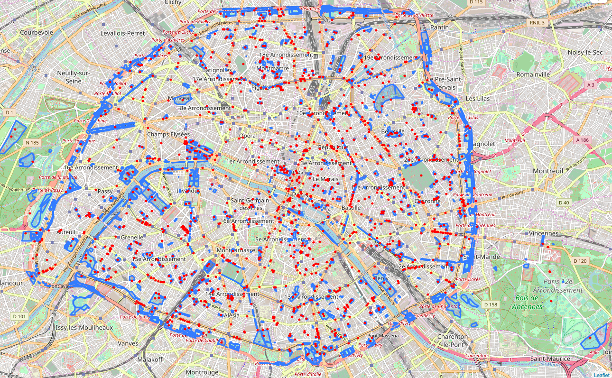
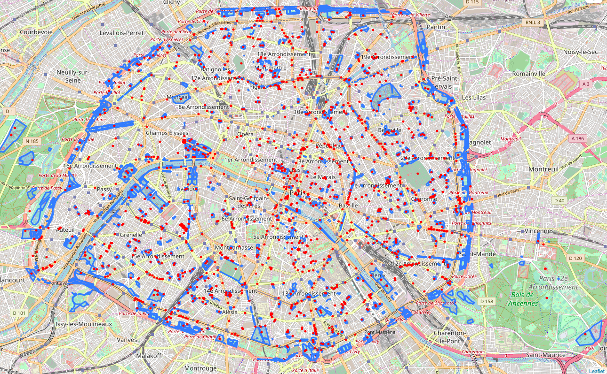

MÉTHODES & ÉTAPES
Les étapes suivies sont en 5 parties:
1. Structuration de l’environnement de travail, récupération des données et pré-traitement de celles-ci
Avant de commencer, il faut préparer l'environnement de travail, ici c'est l'architecture structurée des dossiers et des fichiers. Là on l'a fait manuellement.
Nous avons ensuite recueilli directement des données brutes de chaque fontaine à Paris (Île-de-France) dont la localisation, le modèle, la potabilité etc., ainsi que les données des zones touristiques internationales
et des zones d'espaces verts (parcs ou jardins) à Paris pour analyser la corrélation entre la nature de ces zones et la potabilité des fontaines installées dans ces zones.
Les données que nous avons utilisées sont toutes recueillies depuis opendata.paris.fr. Les données de ce site sont open-source et on peut donc faire du Data-Mining sans limite.
Les fichiers à exporter qui contiennent les données sont de plusieurs types, on en a choisis 2: CSV et GeoJson.
Ci-dessous les détails des données:
- Taille initiale est en total 6 mb dont "fontaines-a-boire.csv" a 31 colonnes 1424 lignes, "parcsetjardinsparis2010.csv" a 12 colonnes 943 lignes, "zones-touristiques-internationales.csv" a 12 colonnes 13 lignes.
- Taille finale après le traitement est en total 7,4 mb dont "fontaines-a-boire.xml" a 8532 balises depuis la racine, "parcsetjardinsparis2010.xml" a 6594 balises, "zones-touristiques-internationales.xml" a 48 balises.
- Il n'y a pas de perte d'information lors du traitement.
- L'échelle de temps
- 2 types de données initiales: CSV (un type pratique pour la modélisation et l'utilisation) et GeoJson (un nouveau type de fichier pour se recharger dans la carte en ligne et y présenter une zone/un graphe prédéfini).
Malheureusement, les données dans les fichiers CSV n'étaient pas bien formattées. La présence des lignes vides et le manque de séparateurs peuvent embrouiller la modélisation dans la suite.
On a eu donc recours au langage de programmation Python pour nettoyer les données, en supprimant les lignes vides et les espaces redondants par exemple. Cette procédure a été intégrée dans le programme pour la modélisation des données.
2. Cette partie consiste à transformer les données après le traitement, en XML.
Pour transformer en XML, on a construit un programme en Python pour modéliser les données. Il s'agit de ne transformer que les informations concernant notre problématique du CSV en XML. Par conséquent le programme
a découpé par virgule chaque ligne dans CSV en morceaux de données et n'en a retiré que quelques morceaux. Puis il a écrit dans un nouveau fichier les balises en XML et a mis les données entre les balises..
Le script d'exemple
Le fichier XML généré des fontaines
Le fichier XML généré des parcs et des espaces verts
Le fichier XML généré des zones touristiques
3.
Pour vérifier les fichiers xml générés automatiquement par nos programmes, on a établi les grammaires DTD et RNG qui valident XML. Vous pouvez consulter en téléchargeant les grammaires créés ci-dessous:
- Les grammaires de "fontaines-a-boire.xml": DTD, RNG
- Les grammaires de "parcsetjardinsparis2010.xml": DTD, RNG
- Les grammaires de "zones-touristiques-internationales.xml": DTD, RNG
4. La dernière étape du traitement des données consiste à formatter les données modélisées. Là on a transformé les données XML en tableau HTML, puis on les a mises en carte pou visualiser les données et pour analyser.
Il y a 2 manières de transformation en HTML qui ont été utilisées dans cette procédure:
- Par XSLT: la première fiche de données HTML (fontaines) a été transformée par le langage XSLT, cliquer ici pour télécharger le fichier XSLT.
- Par Python: les autres tableaux HTML ont été transformés en utilisant le langage de programmation Python, cliquer ici pour télécharger les scripts Python.
-
Tableau Fontaines: ce tableau représente les informations de toutes les fontaines de Paris.
-
Tableau Fontaines potables selon Arrondissements: ce tableau représente le nombre de fontaines potables de chaque arrondissement.
-
Tableau Fontaines potables selon Modèles: ce tableau représente le nombre de fontaines potables ou non-potables de chaque modèle de fontaine.
-
Tableau des Expaces verts: ce tableau représente les informations des espaces verts à Paris.
-
Tableau des Zones touristiques: ce tableau représente les informations des zones touristiques de Paris.
5.
La mise en carte des données était le plus complexe. On s'est référé à Google Maps API pour créer une carte où sont marquées les fontaines. Par contre, nous avons trouvé un module Python "folium" qui peut aider à visualiser les zones polygones sur la carte.
Il suffit de recharger dans le programme le fichier avec le nom d'extension "GeoJson" où se figurent les coordonnées dessinant le contours de la zone.
Carte 1: cette carte représente la localisation des fontaines. On peut voir en gros le nombre des fontaines par arrondissement.
Carte 2: cette carte représente les zones des parcs, jardins dans Paris, en parallèle avec les fontaines potables.
Carte 3: cette carte représente les zones touristiques internationales de Paris et les fontaines potables.

 
